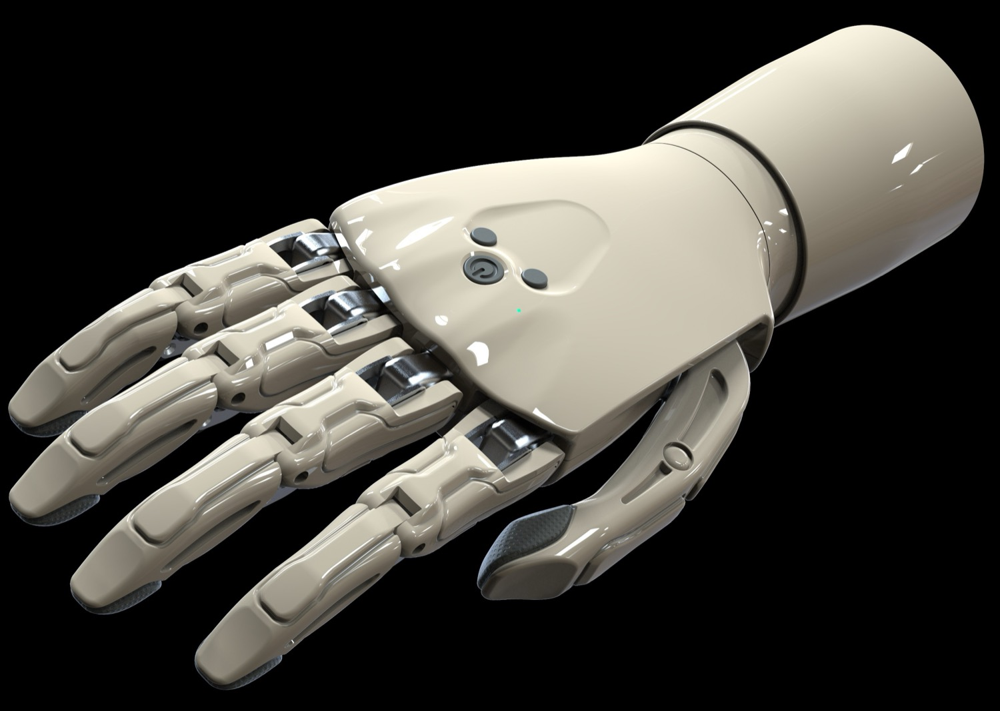

The control works today
The control logic runs, and a recorded trace holds it to its behaviour tick by tick. It is not a description of a method. It is a method that answers.
Deterica · Prosthetic hand control · No electrodes
There is no electrode, no muscle signal, and no training on a signal that drifts with sweat or with a socket that shifts. The input is a movement the person already has. The hand holds the position they give it, so halfway is halfway, and the calibration is two button holds that the user does alone.

Not a sketch
A control method is easy to describe and hard to believe. So here is the hand that exists, and what works today.
The control logic runs, and a recorded trace holds it to its behaviour tick by tick. It is not a description of a method. It is a method that answers.
The control already moved a real hand. Siarhei Arefyev built that hardware, and the recordings above are of that hand.
It runs with no kit at all. A lever and two buttons on the screen drive the same control logic, so the model is something a person can try.
The hand in the videos is a prototype. The team built it and tested it, and it is not a product. The kit is in development, and so is the hand it controls. Nothing here is for sale today.
"It runs" means the control answers and the hardware moved. It does not mean that a person can buy this, and it does not mean that it went through a clinical trial.
What we offer
A prosthetic hand costs more than a car and takes months to obtain. Nobody should have to buy one to find out whether this control model suits them.
So the app comes first, and it is built. It runs on a phone alone: a lever and two buttons on the screen drive the control logic, and a hand on the screen follows them. There is no kit to connect, and no prosthesis to wear. A person can hold the model in their hand and see what it does.
The kit is the next step, and it is in development. It puts the same control logic on a desk: a lever to turn, two buttons, and one light. It connects to the app, and then the lever moves the hand on the screen. The lever stands in for the residual limb, so a person tries the control with no prosthesis of their own.

The app, running on an iPhone
Learn more
01
How a movement a person already has becomes a hand that follows. Why EMG is a load, and what this method does not claim.
02
One idea, two builds: the first hand, what it proved, what it did not, and the new version we build now.
03
It began with my father. What I found in the market, and why I set out to build the thing I could not buy.
Contact
A prosthetist, a user, an engineer, or a person who thinks this model does not hold: the message goes to the founder, and a real human reads every one.